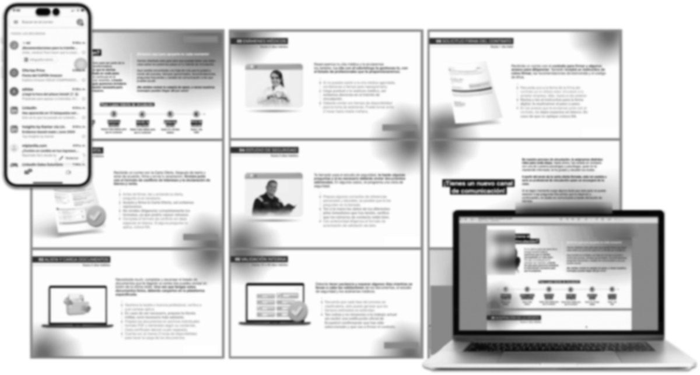
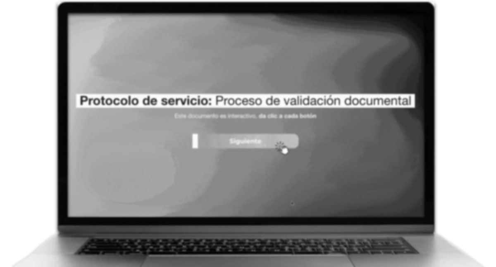
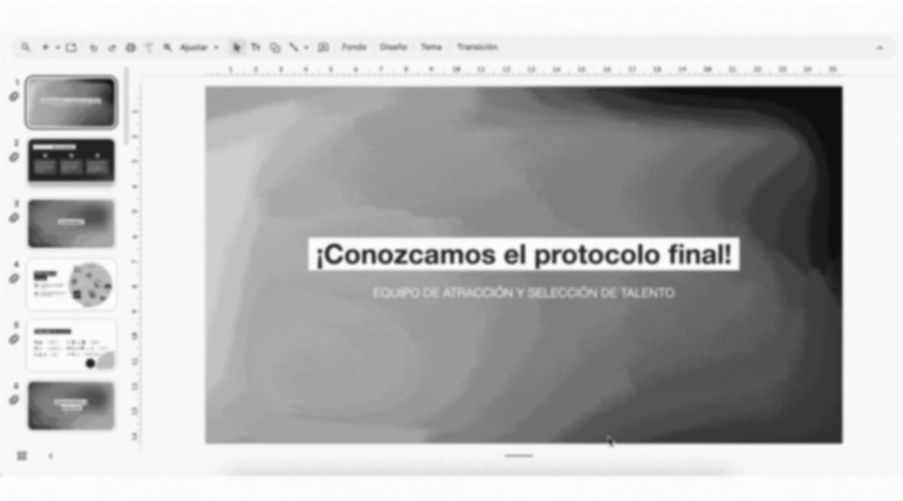

Caso 05 · Service Design Consultant · Háptica · 2024Case 05 · Service Design Consultant · Háptica · 2024
Un trámite de vinculación claro y acompañado.An onboarding process that feels clear and supported.
¿Cómo podríamos lograr que las personas candidatas vivan un proceso claro y acompañado, desde que reciben la oferta hasta que ingresan a la compañía? Un proyecto de consultoría para una gran empresa colombiana.How might we help candidates go through a clear, supported process, from receiving the offer to joining the company? A consulting project for a large Colombian company.
- RolRole
- Service Design Consultant
- ClienteClient
- Empresa del sector energéticoEnergy-sector company
- MétodoMethod
- Doble diamante: focus groups, entrevistas, journey + blueprint, prototipado y validaciónDouble diamond: focus groups, interviews, journey + blueprint, prototyping and validation
- EntregablesDeliverables
- Guía paso a paso y FAQ para candidatos · protocolo interactivo y 8 guiones para el equipoStep-by-step guide and FAQ for candidates · interactive protocol and 8 scripts for the team
Contexto y retoContext and challenge
El cliente pidió un momento wow. El problema real era otro.The client asked for a wow moment. The real problem was different.
Lo que pidieronWhat they asked for
Un momento wowA wow moment
Diseñar un momento memorable dentro del trámite de vinculación.Design a memorable moment within the onboarding process.
Lo que encontramosWhat we found
Un servicio que no era igual para todosA service that wasn't the same for everyone
Cada profesional de selección acompañaba de forma distinta. Antes del wow había que estandarizar el servicio e intervenir también el backstage.Each recruiter supported candidates differently. Before any wow, the service had to be standardised and the backstage redesigned too.
Proceso y mi aporteProcess and my role
Escuchando a candidatos y al equipo interno en cada etapa.Listening to candidates and the internal team at every stage.
01 · Descubrir01 · Discover
Investigación cualitativaQualitative research
Diseñé y facilité 4 focus groups con profesionales, 2 entrevistas con líderes y 10 con colaboradores de 3 ciudades.I designed and facilitated 4 focus groups with recruiters, 2 interviews with leaders and 10 with employees across 3 cities.
02 · Definir02 · Define
Journey, blueprint e insightsJourney, blueprint and insights
Construí el journey de 6 momentos con el blueprint del backstage y sinteticé 9 insights.I built the 6-moment journey with the backstage blueprint and synthesised 9 insights.
03 · Desarrollar03 · Develop
Piezas y protocoloAssets and protocol
Diseñé la guía para candidatos, las preguntas frecuentes, el protocolo y los guiones, y los validé con usuarios y profesionales.I designed the candidate guide, FAQs, protocol and scripts, and validated them with users and recruiters.
04 · Entregar04 · Deliver
ImplementaciónImplementation
Entregué piezas editables y acompañé una sesión presencial para que el equipo practicara el nuevo protocolo.I delivered editable assets and led an in-person session for the team to practise the new protocol.
El journeyThe journey
Seis momentos, y uno donde todo se volvía incertidumbre.Six moments, and one where everything turned uncertain.
Pico de ansiedad: en la validación interna paraban las llamadas y nadie sabía si seguía en el proceso.Anxiety peak: during internal validation the calls stopped and no one knew if they were still in the process.
InsightsInsights
Lo que vivían las personas candidatas.What candidates were going through.
Entre tecnicismos, la orientación marca la diferenciaAmid jargon, guidance makes the difference
Los formatos financieros y de conflicto de intereses eran tan técnicos que varios terminaron pidiendo ayuda a un contador.Financial and conflict-of-interest forms were so technical that several ended up asking an accountant for help.
Poco tiempo para preparar, mucho para cargarLittle time to prepare, lots to upload
Sin aviso previo, el plazo para reunir todos los documentos se sentía corto.Without a heads-up, the deadline to gather every document felt short.
Una carga que tomaba horasAn upload that took hours
Cargar los documentos tomaba mínimo dos horas, y nadie lo avisaba antes.Uploading documents took at least two hours, and no one warned them beforehand.
La ansiedad me hace preguntar cómo va mi procesoAnxiety makes me ask how it's going
Sin una línea de tiempo visible, llamaban al equipo para saber si seguían en el proceso.With no visible timeline, they called the team to find out if they were still in.
La propuestaThe proposal
Intervenir el frontstage y el backstage al mismo tiempo.Redesigning frontstage and backstage at the same time.
Frontstage · CandidatosCandidates
Autogestión con claridadSelf-service with clarity
- 01Guía visual con el paso a paso de todo el trámiteVisual guide with every step of the process
- 02Preguntas frecuentes organizadas por momentoFAQ organised by moment
- 03Correo plantilla para enviar la guíaEmail template to send the guide
Backstage · Equipo de selecciónRecruiting team
Un servicio estandarizadoA standardised service
- 04Protocolo interactivo: actividades, canales, recursos y reglas de oroInteractive protocol: activities, channels, resources and golden rules
- 058 guiones de llamada y correo8 call and email scripts
- 06Sesión práctica “Del cine al servicio”Hands-on session “From cinema to service”


